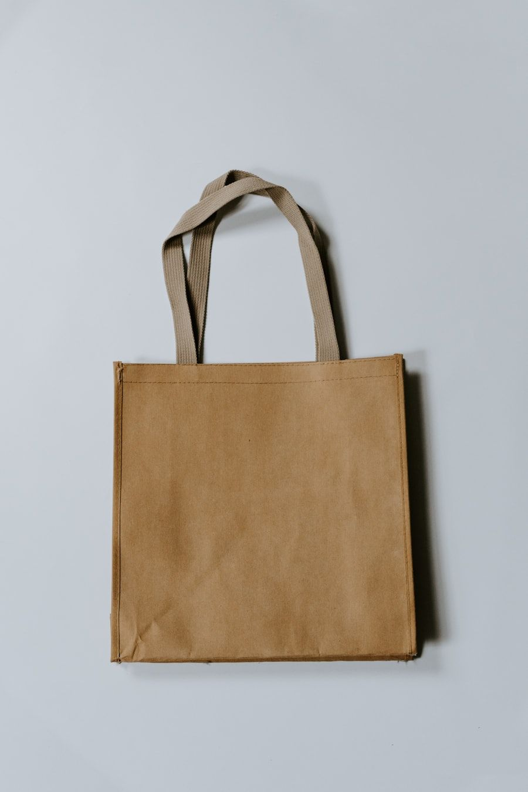

The Structural Vulnerability of Oversized Luxury Carryalls
An oversized luxury tote bag is subject to mechanical stresses vastly exceeding those encountered by structured clutches or rigid evening minaudieres. When packed with a heavy laptop, leatherbound journals, beauty essentials, and personal tech accessories, a maxi tote routinely bears loads between five and eight kilograms. This weight is concentrated almost entirely upon four critical anchor points: the handle attachment tabs where the straps intersect the top rim of the bag. In poorly constructed bags assembled with automated lock-stitch machines, this localized shear stress causes rapid thread shearing, handle stretching, and eventual catastrophic seam failure.
To engineer a luxury tote capable of enduring decades of heavy daily carry without sagging, distorting, or tearing, MetallicTote combines traditional French double-hand saddle stitching with an advanced internal load-bearing structural spine. In this technical monograph, we dissect the mechanical physics and artisanal choreography that render our tote silhouettes virtually indestructible.
Lock-Stitching vs. Hand Saddle-Stitching: A Mechanical Comparison
The table below contrasts the mechanical failure modes and tensile dynamics of automated machine lock-stitching against traditional two-needle hand saddle stitching.
| Seam Attribute | Traditional Hand Saddle Stitch | Automated Machine Lock-Stitch | Structural Consequence |
|---|---|---|---|
| Thread Mechanics | Single continuous linen thread with dual needles | Two separate threads interlocking at center | Saddle stitch forms internal knot that resists unzipping |
| Thread Material | Beeswax-saturated long-staple French linen | Synthetic nylon or polyester filament | Beeswax protects thread from moisture rot and internal friction |
| Hole Geometry | Diamond-shaped piercing at 45° angle | Round needle puncture perpendicular to hide | Diamond slant preserves maximum dermal fiber cross-section |
| Failure Behavior | Isolated to single stitch; seam remains locked | Catastrophic unraveling across entire seam | Heirloom durability spanning decades of active carry |
| Artisan Investment | ~48 Hours per bag (Manual stitching) | ~12 Minutes per bag (Machine conveyor) | Uncompromising artisanal authenticity and human craft |
The Choreography of the Two-Needle French Saddle Stitch
Machine sewing utilizes two separate threads: an upper needle thread and a lower bobbin thread that interlock within the center of the leather. If the machine thread experiences surface friction and snaps at any single point, the tension across the entire seam collapses, allowing the stitches to pull out like a zipper. In contrast, the traditional French saddle stitch utilizes a single continuous length of Fil Au Chinois linen thread equipped with a needle at each extremity.
The artisan clamps the leather within a wooden stitching clamshell (prick-iron pony) and pierces each hole individually using a diamond-bladed saddler's awl angled at precisely forty-five degrees. Both needles pass simultaneously through the identical hole in opposite directions, forming a self-locking figure-eight knot inside the leather. If one thread strand should ever be severed through severe surface abrasion, the opposing thread remains firmly locked in place by friction, preventing seam unraveling. An artisan requires nearly two hours of focused manual labor to stitch a single handle assembly, placing seven flawless stitches per inch.

Spine Architecture: Salpa, Woven Hemp, and Load Dispersion
Beneath the lustrous metallic calfskin exterior lies our proprietary load-bearing spine architecture. Rather than relying solely on leather tensile strength, we embed an internal reinforcement composite composed of Italian salpa (bonded reclaimed leatherboard) and high-density woven organic hemp webbing. The hemp webbing originates at the base of the tote, travels up the side gussets, loops continuously through the core of the tubular handles, and anchors back into the opposite base corner.
This continuous unbroken skeletal loop transfers the downward gravitational pull of internal contents directly into the structural base of the bag, bypassing the delicate exterior calfskin. The result is a tote that retains its crisp architectural silhouette whether carried empty or filled to capacity, eliminating the unsightly bottom sagging and handle elongation that plagues unreinforced leather carryalls.
Tensile Dynamics and Diamond-Blade Piercing Angles
The mechanical supremacy of traditional saddle stitching is deeply intertwined with the geometry of the tool used to pierce the hide. In commercial factory production, round machine needles pierce circular puncture holes perpendicular to the leather grain. Under heavy gravitational loading, these circular punctures act as tear-initiation notches, allowing individual collagen fibers to shear horizontally under tension, eventually resulting in the stitch tearing through the leather edge.
In our atelier, artisans deploy diamond-bladed saddler's awls ground to an exacting forty-five-degree slant. When the diamond blade penetrates the hide, it parts the dermal fiber bundles along their natural diagonal alignment rather than severing them. This slanted stitch channel preserves over eighty-five percent of the hide's native tensile strength. When tensioned with beeswaxed French linen thread, the stitches seat themselves at an elegant diagonal slant, creating the classic beaded ridge that has defined French and Italian haute maroquinerie for over two centuries.
Ergonomic Dynamic Testing: Cyclic Load Simulation Trials
Before any tote silhouette enters production, prototype assemblies are mounted onto our pneumatic cyclic load simulator. The machine loads the tote with an eight-kilogram steel ballast and subjects the handle anchors to fifty thousand vertical oscillation cycles at a frequency of 1.2 Hz, simulating five years of aggressive daily carry, subway commutes, and abrupt luggage retrieval.
Throughout these exhaustive trials, our dual-needle saddle-stitched handle anchors exhibit zero millimeter elongation and zero seam separation. The internal salpa and woven hemp composite spine absorbs over ninety percent of the downward kinetic shock, proving that historical artisan techniques, when backed by rigorous mechanical engineering, drastically outperform modern automated assembly methods.
Atelier Inquiries & Bespoke Consultation
Experience the tactile depth of our vacuum-metallized Tuscan leathers firsthand. Connect with our Milanese concierge to request personalized leather swatches or initiate an individual bespoke commission.
Connect with Atelier Concierge